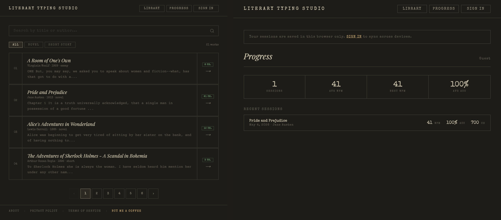
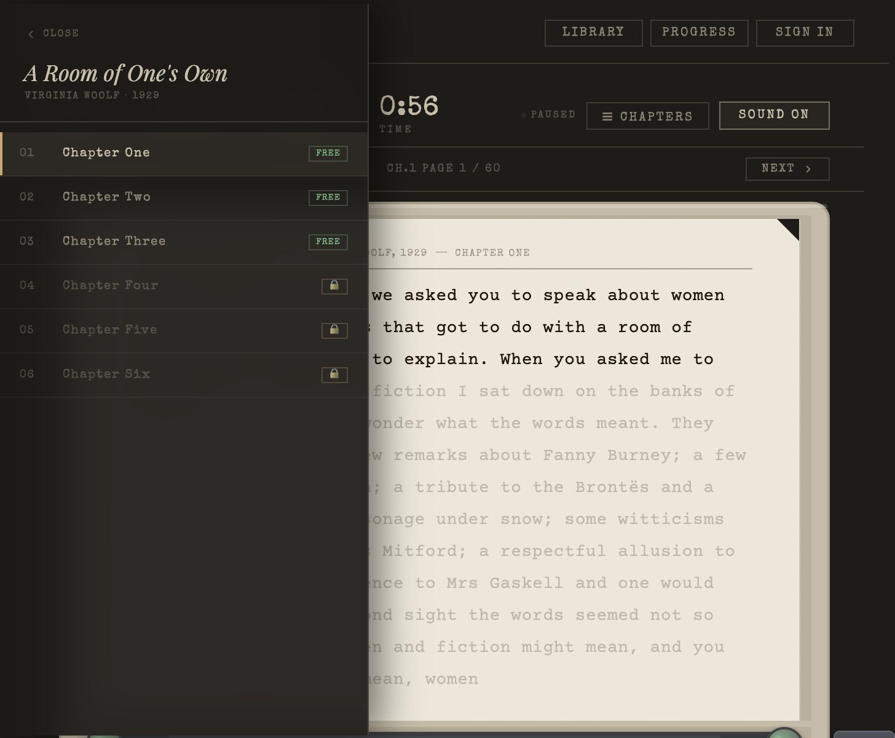

Literary Typing Studio is a web-based typing practice app built around classic literature. Instead of typing random sentences or code snippets, users type through the actual text of great novels — Pride and Prejudice, The Great Gatsby, Crime and Punishment, and more.
The audience is people who already love books and see typing as a craft, not just a speed metric to optimise. People who spend time at a keyboard and want that time to feel like something. As a designer and reader myself, I wanted to build an experience that respected both the user's attention and the literature they were engaging with — not just another productivity tool.
Visit lit-typing.com ↗Existing typing tools like Monkeytype or Keybr are built purely around speed metrics — random words, code snippets, or nonsense phrases. They optimise for WPM but offer no depth, no meaning, no reason to keep going beyond the number.
I wanted to build something that answered a different question: what if typing practice felt like an experience worth having? A space that respects both the user's time and the literature they're engaging with.
Every design choice was made to get out of the way of the text. The interface is deliberately minimal — warm off-white background, serif typography, no distracting UI chrome. The reading experience should feel like a page, not an app.
The vintage typewriter sounds were a deliberate UX decision — tactile audio feedback that reinforces the literary atmosphere and makes each keystroke feel physical and satisfying.

Library (21 works) and Progress tracking — real session data from the live product

Chapter panel — free chapters 1–3, locked chapters unlock with a one-time €12.99 payment
The pricing model was a deliberate UX decision: no subscription. Subscriptions create anxiety — users feel pressured to "get their money's worth" every month. A one-time payment of €12.99 unlocks all chapters and all works permanently.
The first 3 chapters of every work are always free — enough to experience the product fully, build a habit, and decide whether it's worth keeping. Payment is never forced, only offered.
This project went from design decisions to a live, paying-user product without a separate engineering team. Using AI as a development partner, I was able to iterate on the design and immediately see it working in the browser — which changed how I made decisions. When you're the one implementing it, you stop designing things you're not sure will work.
The result is a fully functional web app with Google authentication, Stripe payments, real-time WPM tracking, and a 21-work library — all shipped as a solo project. The design constraints were real: if I couldn't explain the interaction to an AI in clear terms, the design probably wasn't clear enough to begin with.
Shipping to real users changed how I evaluate design decisions. The features I thought were clever — detailed keyboard shortcut guides, layered stats breakdowns — barely got used. The features I almost cut for simplicity — the typewriter sounds, the warm background — were the first things people mentioned when they talked about the app.
Real use is a much more honest critic than a design review. I now apply that lens to every project: if we shipped this tomorrow, what would users actually do with it? The answer is usually simpler than what's in the file.